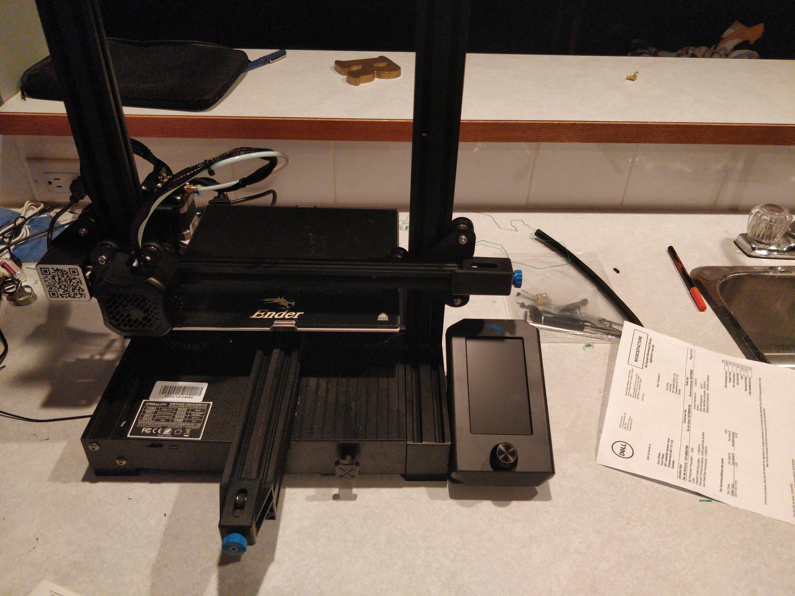
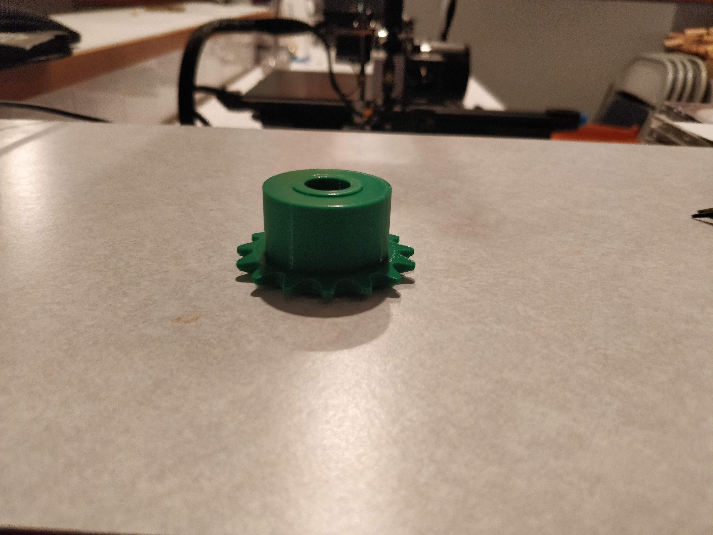
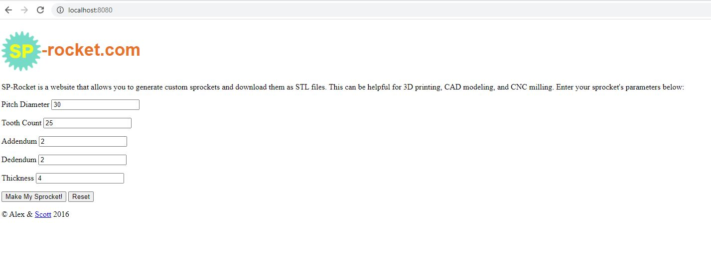
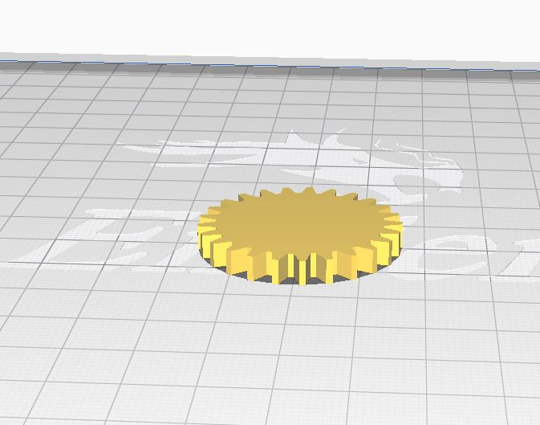
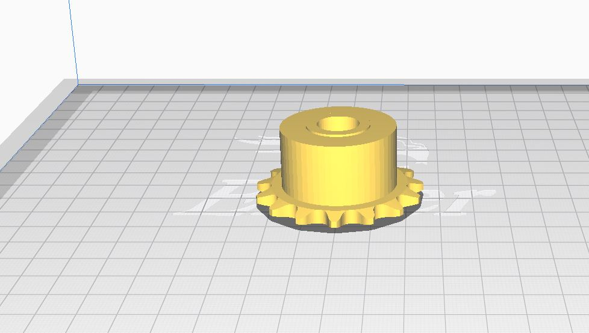
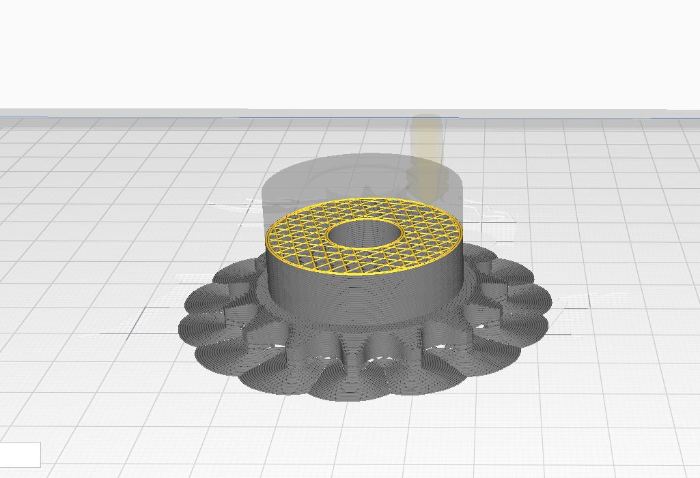
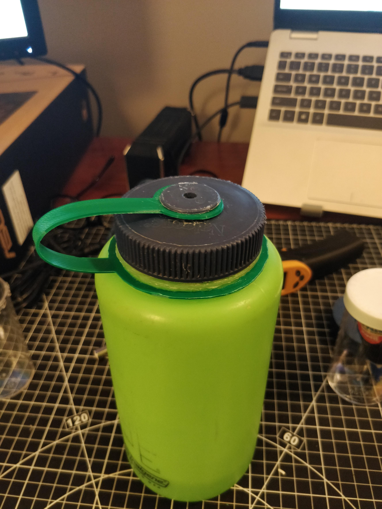
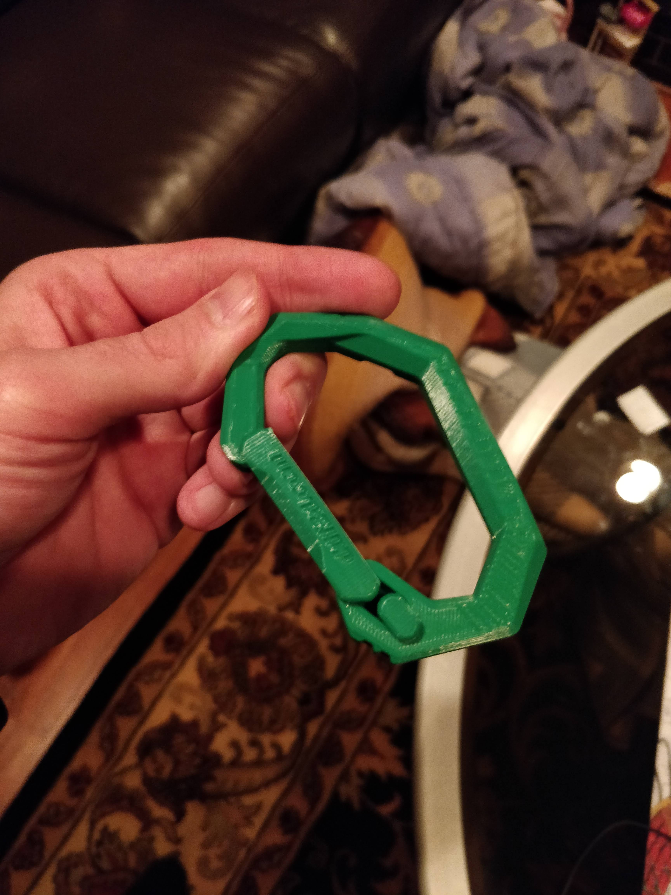

3D Printing Gears
April 19, 2021
Introduction
Additive manufacturing is the process of adding material to create and manufacture a part or component. Typically called rapid prototyping or 3D printing. Since I will be talking about parts being in production not just prototypes, I will use the term 3D printing.
This has advantages and disadvantages in the real world. One example is implementing gearing mechanism. Naturally, gears are difficult to manufacturing using traditional manufacturing. One additional way is to use a tool such as a water jet to create the base shape of
the gear. Additional grinding is needed to create the gear tooth pointing though. But if the gear is a complicated shape then this 2D water jet method isn’t the best.
Using 3D printed parts one can create complex custom shapes to implement in their projects or designs quickly in the sense of conception to realization.

Figure 1 Ender 3 V2 3D printer
Material
Nylon would be the best material to print gears with because it is strong and has a low coefficient of friction, but it is hard to print with and most printers aren’t set up for it. There is also Acrylonitrile Butadiene Styrene (ABS) and Polylactic Acid (PLA). ABS is good to use in high temperature applications. PLA is strong and has good wear properties, so it makes it a perfect choice for common gear printing if the temperatures aren’t too high. (Michael, 2017) When printing a gear with PLA one can increase the infill percentage to create higher strength of the part.
Sourcing Designs
McMaster-Carr website has a large catalogue of gears and other products and they provide the solid files so one can download the design you need and print it very easily, instead of drafting the entire gear up by yourself. It depends if your desired gear size and configuration is on the catalogue or not.

Figure 2 3D printed gear downloaded from McMaster-Carr
Thingiverse is also a great online platform for open-source designs easy to download. The selection won’t be as technical and specific. But sometimes there are designs on the website that fit your application perfectly. It might not be a great spot to pick a gear from a specification but sometimes the project you’re working on is already on the website for easy download and print.
Drafting Yourself
It can be quite a challenge to draft up a working gear on your own, especially as a hobbyist. But there are sources that are in between finding the exact gear in an STL or designing it from scratch. You can pick the parameters with an interface and then download the STL file. I found a good one that isn’t online anymore, but I got the node.js app working locally from GitHub.

Figure 3 SP-Rocket(Alex & Scott 2016)

Figure 4 Parametric gear downloaded from SP-rocket in Cura
Advantages
Advantages are that it is quick to be up and running again with a printed part for your application. The time from thinking of a project and realizing it into 3D part is fast compared to traditional manufacturing. Printing complicated designs is a lot easier with additive manufacturing than traditional as traditional manufacturing would be costly and timely. Especially if the location where the part is going is complicated, that can add problems that aren’t always first considered. So, thinking of the actual application while in the design and realization process of the part can help with smoothness and effectiveness.
Disadvantages
The disadvantages of this are that if it’s printed in the classic PLA, it won’t be as strong as if it were made from steel. One could use more infill and if it is a relatively low impact part then it should hold up just fine. If it does fail, then another can be printed without too much issue. Using an extrusion printer there can be less resolution in the print rather than a stereolithography print, which can have imperfections in the application of the part. If the gear teeth have slight imperfections, they might not mesh as well as they should. But filing down the printed parts can help this issue. It is common to file down some defects after a print.
Slicing
I use Ultimaker-Cura, it is an open-source slicing software that is easy to use. When you download an STL file from the sources I mentioned or create one on your own it is easy to upload this into the Cura slicing software. Then you can orientate the part to try and minimize the supports. I show here the STL file of the gear I found on McMaster-Carr and then I show the preview of the toolpath it will take to print the part. I used a support on this because both sides are uneven, and the sprocket side down needs a bit of support because the teeth are beveled out. I also use the brim function to allow for a smoother start of the print. I found if I didn’t use a Build Plate Adhesion the first couple paths would mess up so adding the thin brim creates a nice base for the part. I used raft a couple times, but it adds a lot of material which is therefor more time, so I found the brim feature works best.

Figure 5 Gear in Cua slicing software

Figure 6 Cura showing the toolpath of the gear
Recommendations
3D printing can have many uses in our day to day lives not just in a technical application such gearing. I printed a carabiner that is functional. I printed a strap for my water bottle, but it didn’t last that long because PLA is more brittle than what is needs to be for this application.

Figure 7 3D printed water bottle strap

Figure 8 3D printed functional carabiner
I really enjoyed my experience with 3D printing. The learning experience I got from it was worth the price of it. I would recommend investing the time and money into learning how to use a 3D printer even for at home as a hobbyist. It can really pay out in the projects that can be made with it.
References
Michael, (2017) A Practical Guide to FDM 3D Printing Gears, EngineeringDog.com https://engineerdog.com/2017/01/07/a-practical-guide-to-fdm-3d-printing-gears/
McMaster-Carr, online catalogue https://www.mcmaster.com/
Thingiverse, platform to share 3D models. https://www.thingiverse.com/
Ultimaker-Cure slicing software https://ultimaker.com/software/ultimaker-cura
Alex & Scott 2016, SP-rocket, GitHub https://github.com/smeans/sp-rocket